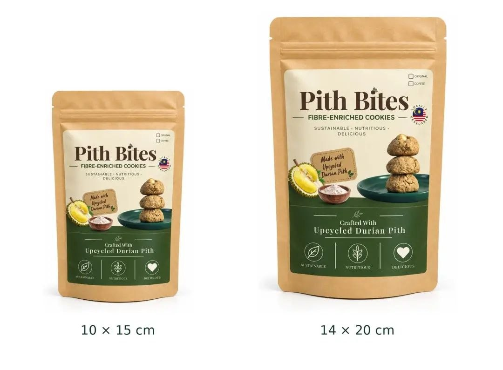
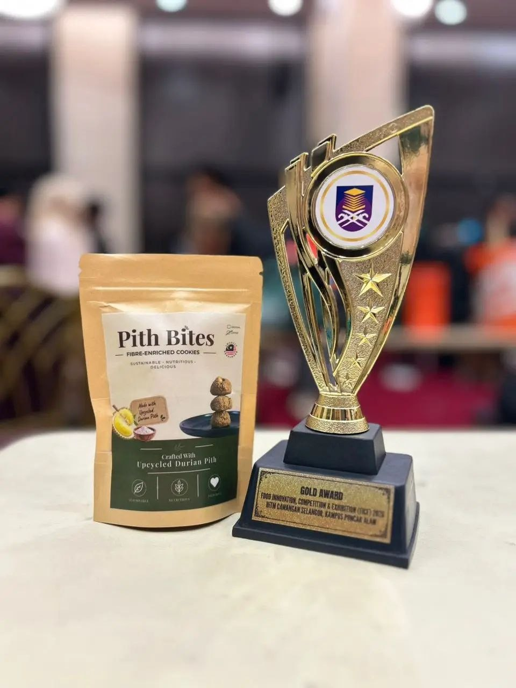
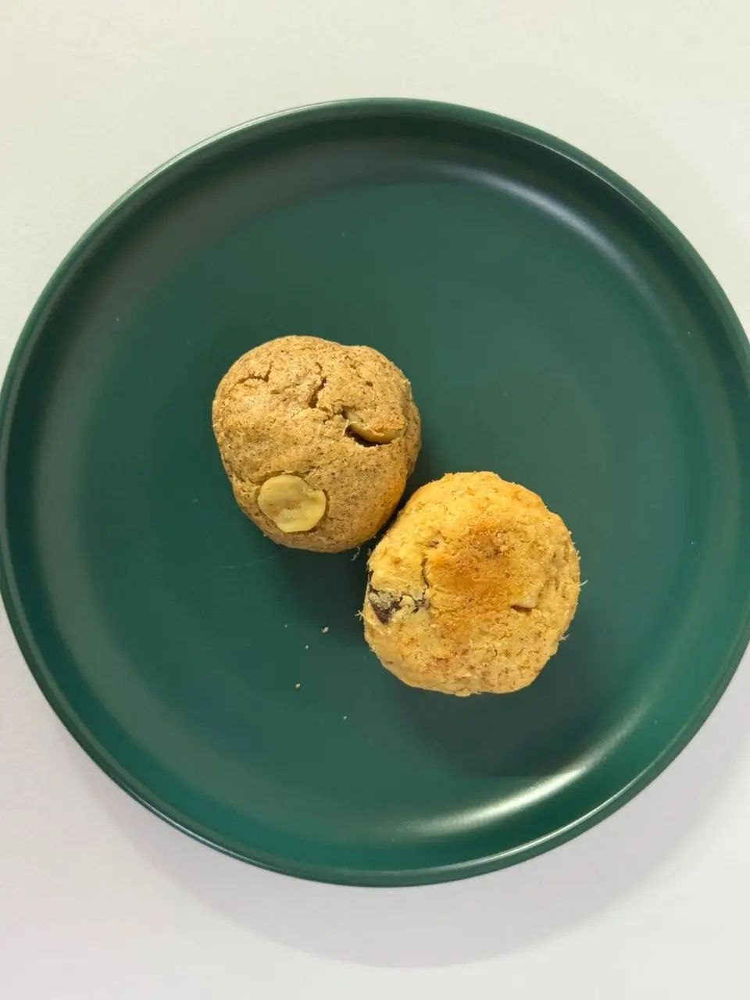
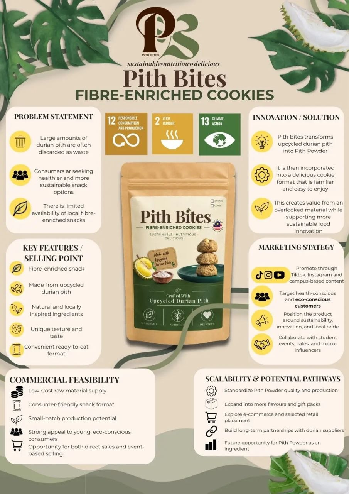
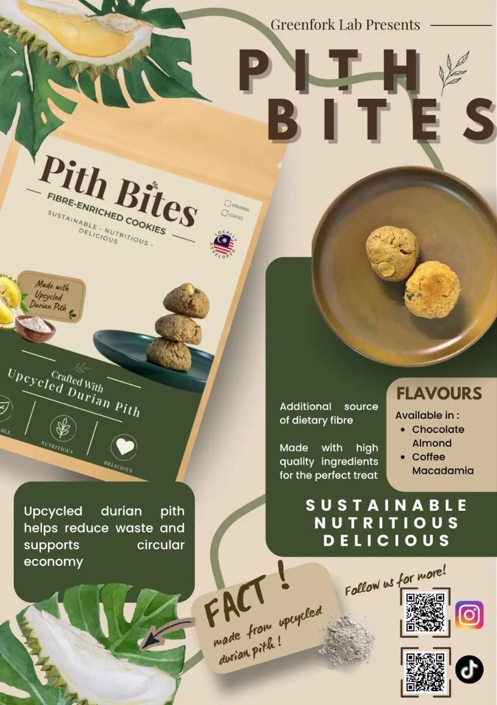

Agricultural by-product waste
- Processing generates substantial amounts of biomass
- Much of this material has limited application
Sustainable · Nutritious · Delicious
Fibre-enriched cookies crafted with upcycled durian pith. The cookie, reimagined with an unconventional, Malaysian twist.
Locally developed in Malaysia · Pack of 5 from RM6.90 · Pack of 10 from RM12.90

We are a sustainable food innovation venture that aims to transform underutilized durian pith into a value-added, fibre-enriched cookie.
Presented by Haseen & Huda. Pith Bites is presented by Greenfork Lab.
🏆 Gold Award – Food Innovation, Competition & Exhibition (FICE) 2026, UiTM Cawangan Selangor, Kampus Puncak Alam


Pith Bites transforms upcycled durian pith into Pith Powder, then incorporates it into a delicious cookie format that is familiar and easy to enjoy. This creates value from an overlooked material while supporting more sustainable food innovation.
Our USP: Overlooked durian pith to an everyday snack. The cookie, reimagined with an unconventional, Malaysian twist.
Made from durian pith powder, giving an underutilized agricultural by-product a new life.
Incorporates durian pith as an additional source of dietary fibre.
Transforming a local delicacy into an innovative and convenient snack.
Two flavours: Original Chocolate Chip and Coffee & Macadamia.
5 pieces · 10 × 15 cm pouch
RM6.90
10 pieces · 14 × 20 cm pouch · 100 g*
RM12.90
*Based on 100 g finished net weight; to be confirmed after baking. To buy, add packs to your cart and send your order to us on Instagram @Pith_Bites. We confirm availability, payment and delivery there.
| Pith Bites | Famous Amos | |
|---|---|---|
| Pack | 100 g Value Pack* | 100 g cookies |
| Price | RM12.90 (proposed retail price) | RM14.90 (standard-outlet listed price) |
| Difference | RM2 less per 100 g | |
Familiar flavours. A distinctive upcycled ingredient.
Source: Famous Amos official price list, checked 1 Oct 2026. Prices vary by outlet and promotion. *Comparison assumes 100 g finished net weight for Pith Bites; confirm after baking.
Prototype developed. Initial consumer feedback collected.
Durian pith → Prototype → Pilot feedback
| Attribute | Original Chocolate Chip | Coffee & Macadamia |
|---|---|---|
| Appearance | 4.39/5 | 4.25/5 |
| Flavour | 4.35/5 | 4.26/5 |
| Aroma | 4.23/5 | 4.26/5 |
| Texture | 4.06/5 | 4.14/5 |
All eight sensory averages exceeded 4/5. Next refinement priority: texture.
31 responses
Pilot feedback · 27–31 responses per sensory question · Five-point rating scale
From prototype to market-ready product.
Invest in readiness. Test demand. Grow with evidence.
Repurpose durian pith
Build youth entrepreneurship
Build trust through transparency
Validate nutritional value and explore affordable food applications that could improve access to nutritious food.
Support resource reuse and waste reduction by upcycling durian pith.
Assess climate benefits from waste diversion alongside energy use and emissions from production.
“Giving durian pith a new purpose—and creating value with every bite.”


We overlooked not as waste, but as an opportunity…
Email: pithbites@gmail.com · Website: www.pithbites.com
Want to buy? Message us on Instagram: @Pith_Bites